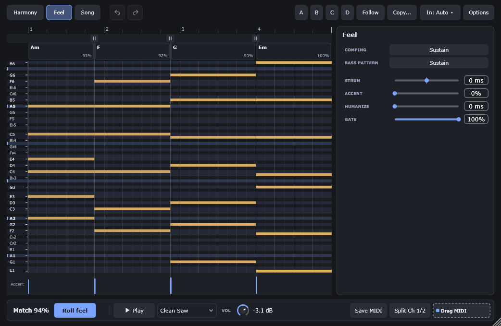

Brightness
Move from darker chord colors and lower voicings toward brighter colors and higher notes. Try lifting the last two slots into a chorus.
Harmony to MIDI
Give your loop a shape with Brightness, Tension, and Energy. ChordSlots searches for a progression, voices it, and gives you editable MIDI to play with your own instruments.

A slot is one stretch of the timeline where a chord plays. Give each slot a target, then listen to how those targets translate into harmony and performance.
Move from darker chord colors and lower voicings toward brighter colors and higher notes. Try lifting the last two slots into a chorus.
Raise it where you want the harmony to feel unsettled. Lower it where you want the loop to settle. The move from the last chord back to the first counts, too.
Give the same chords a softer or stronger attack. Higher targets raise MIDI velocity and can add octave doublings when the voicing has room.
Pick a key, scale, and mood to start. Move the chord cuts and edit the targets across up to 16 slots and 8 bars. Press Roll and audition the loop with the built-in preview.
Lock a slot or layer before rolling again. Use Inspect to audition alternatives, invert the upper chord voices, or choose a separate bass note. Store different ideas in variations A–D.
Try a comping or bass pattern, then adjust Strum, Accent, and Humanize. Watch the chord and bass notes in the piano roll as you edit.
Chain up to 16 sections in Song, choosing a variation and transposition for each. Drag out chord, bass, or song MIDI. If your host supports MIDI routing from the plugin, you can use it to drive another instrument live.

Import a MIDI melody and turn up Melody Fit. Long notes and notes on strong beats have more influence over which chords are chosen.
Match summarizes how close the measured Brightness and Tension are to your targets. Use it to see where the roll followed your sketch, then choose the version that sounds right in your track.
Listen to paired examples and tell us what you hear. The listening survey takes about 45 minutes and helps evaluate proposed changes to the engine.